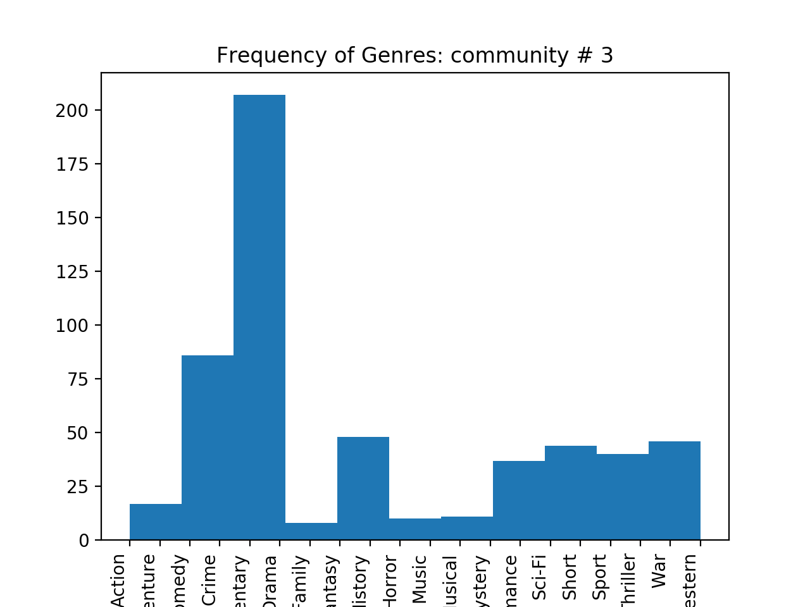
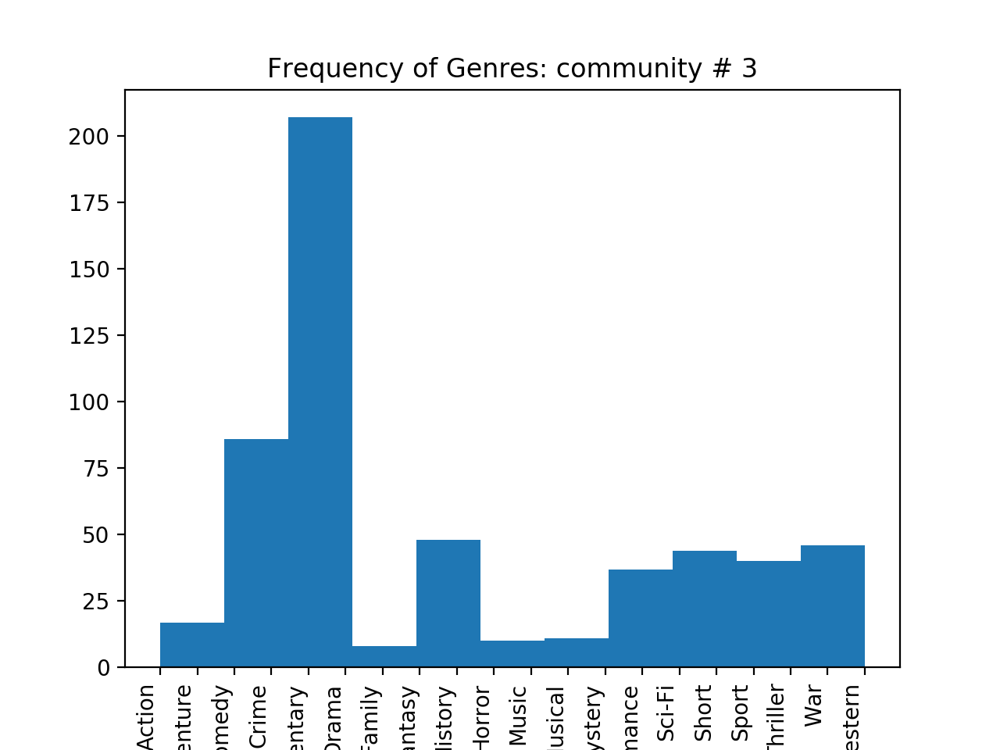
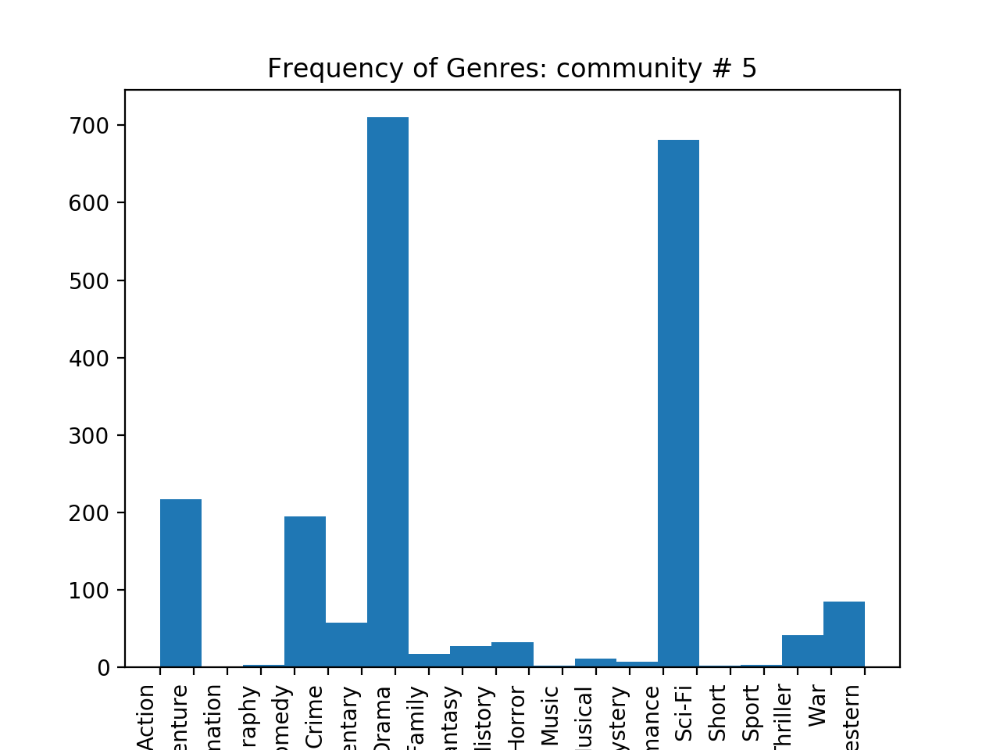
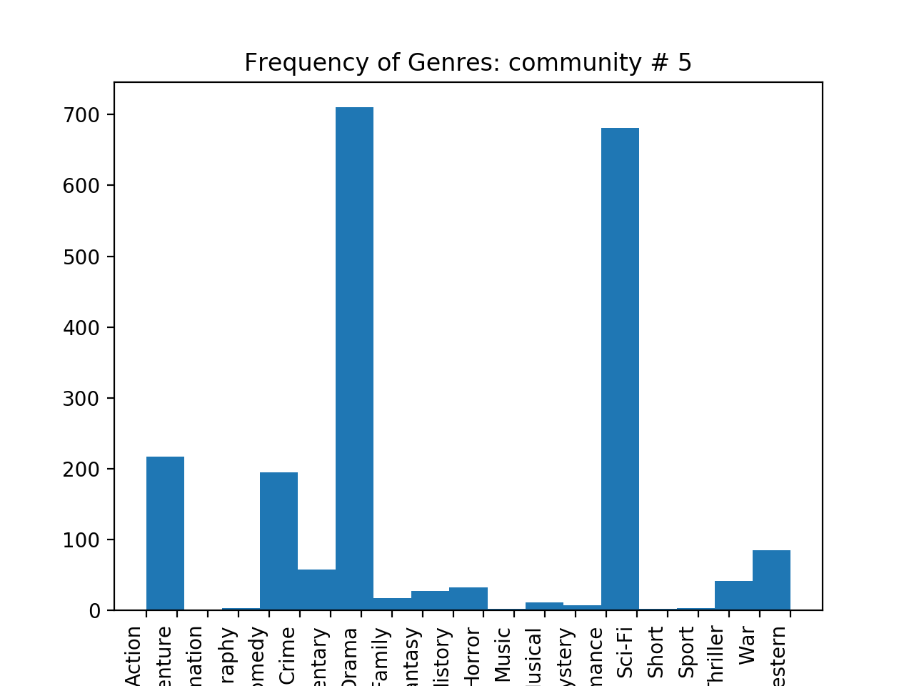
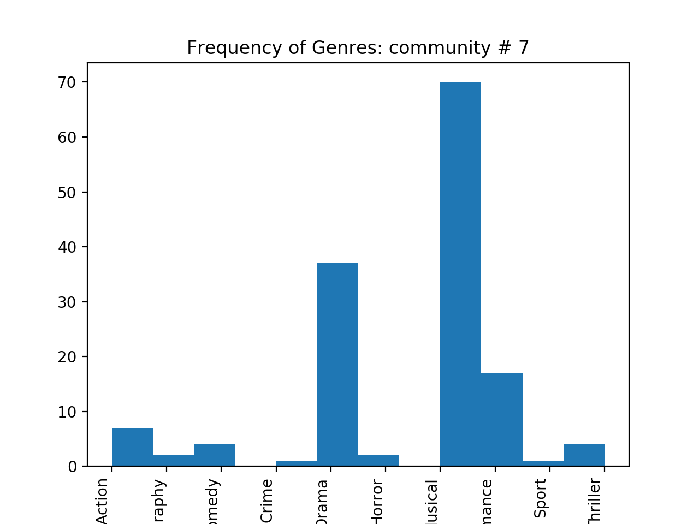
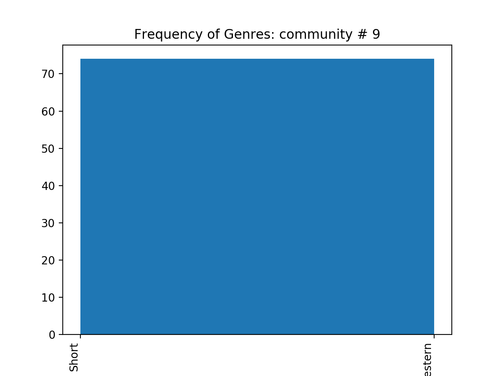
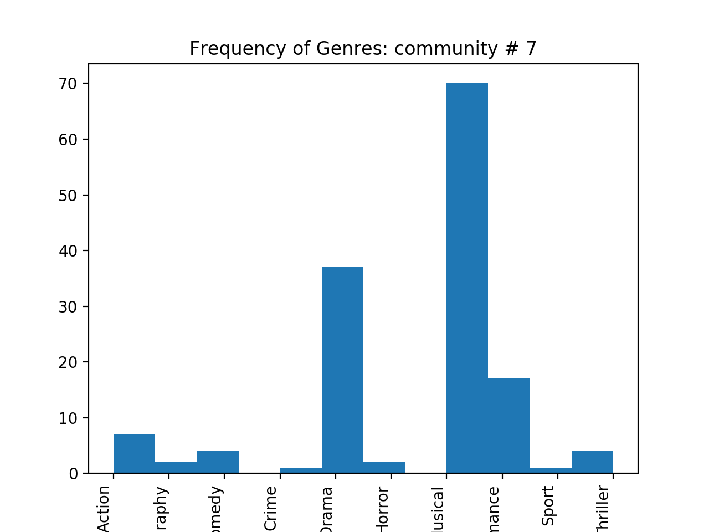
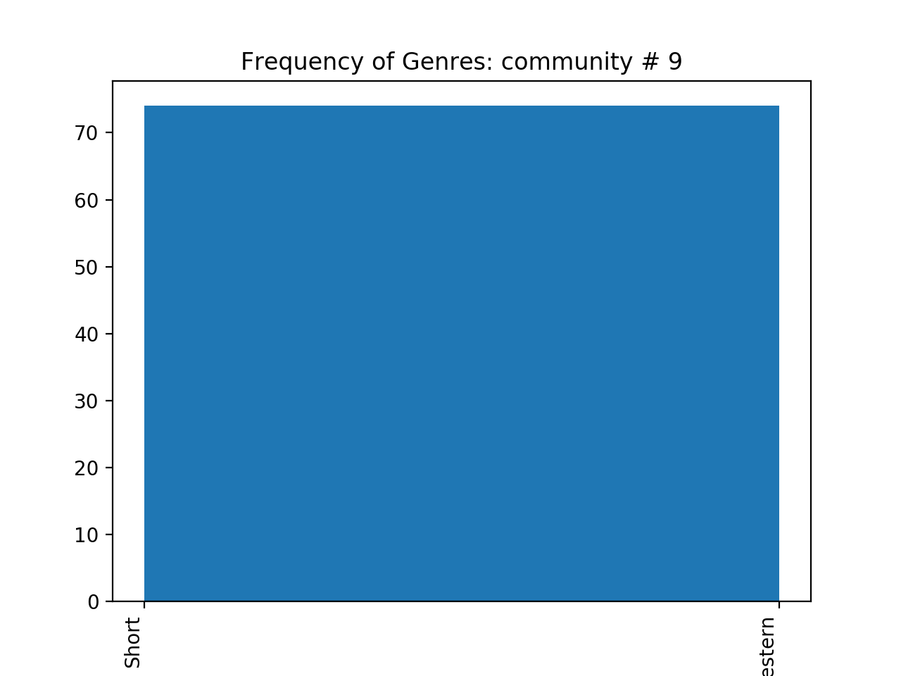
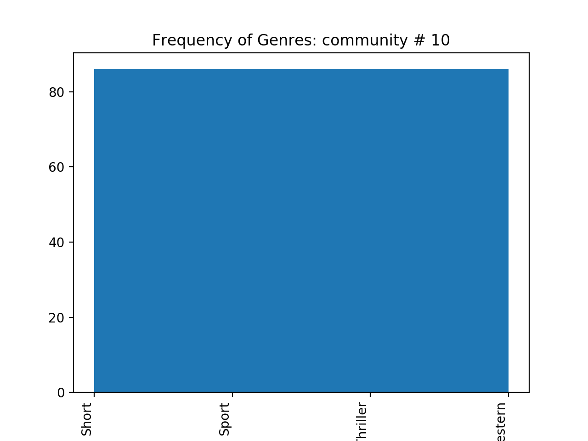
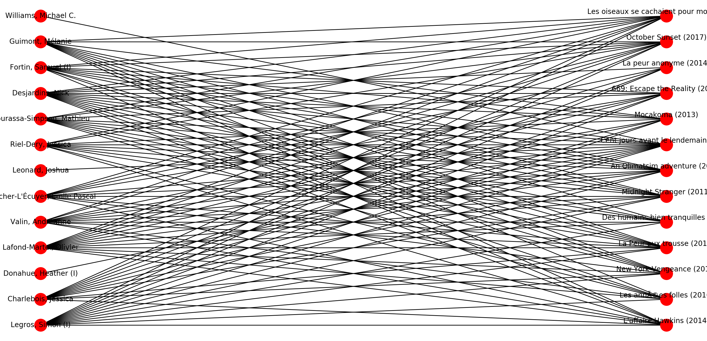

The most dominant genre in this community is Drama
The most dominant genre in this community is DramaThe total number of actors and actress is 113074. The total number of unique movies is 202483.
The in-degree distribution of the weighted actor/actress network.
From the plot, we can clearly see the most people did not have any inward degree in that network. Even the highest peak has only around 0.0038. For the people have inward degree, most of them lay between 0 to around 1000.
Below we report the actor pairs and the weight for each pair. The actor pairs make sense.
Below we report the top 10 actors/actresses.
Bess Flowers: 21023, 14922
Sam Harris (II): 15467, 13702
Harold Miller (I): 14563, 12922
Fred Tatasciore: 10860, 7596
Ron Jeremy: 16630, 5648
Steve Blum (IX): 12472, 6418
Jeffrey Sayre: 11108, 11982
Kenner G. Kemp: 10815, 12104
Franklyn Farnum: 14391, 11938
Yuri Lowenthal: 9899, 5200
No, none of them is listed in the previous section. Because most of them are senior actors/actresses and they acted in so many influential movies. People in our decade may not be familiar with them.
Below we report the actors/actresses in the Question 3.
Tom Cruise: 1.618891e-05, 1712, 1974
Emma Watson (II): 1.692606e-05, 943, 866
George Clooney: 2.754246e-05, 1887, 3060
Tom Hanks: 3.426885e-05, 2101, 4014
Eddie Johnson (I): 1.120852e-05, 309, 1070
Johnny Depp: 3.393277e-05, 3132, 4152
Will Smith (I): 2.457424e-05, 1249, 2460
Meryl Streep: 2.483367e-05, 2826, 3082
Leonardo DiCaprio: 2.469046e-05, 1345, 2532
Brad Pitt: 2.953705e-05, 1786, 3406
1.
The most dominant genre in this community is Drama
2.
 The most dominant genre in this community is Short
3.
The most dominant genre in this community is Short
3.
 The most dominant genre in this community is Documentary
4.

The most dominant genre in this community is Drama and Documentary
5.
The most dominant genre in this community is Documentary
4.

The most dominant genre in this community is Drama and Documentary
5.
 The most dominant genre in this community is Adult
6.

The most dominant genre in this community is Documentary
7.
The most dominant genre in this community is Adult
6.

The most dominant genre in this community is Documentary
7.
 The most dominant genre in this community is Short
8.

The most dominant genre in this community is Musical
9.
The most dominant genre in this community is Short
10.

The most dominant genre in this community is Short
The most dominant genre in this community is Short
8.

The most dominant genre in this community is Musical
9.
The most dominant genre in this community is Short
10.

The most dominant genre in this community is Short
The most dominant genre out of these 10 communities is Drama.
The most dominant genre calculated using the scoring function are different from the most frequenty genre by coount. The reason is that, the normalization used in the scoring function removes the bias. For exmple, Drama is usually a very dominant genre. So many movies in the community have the same Drama genre. Therefore, it is not intuitive to compare the count directly. So the scoring function is a better indication of the dominant genre since the frequency is normalized.
 In terms of frequency, the above four genre share the same count. According to the scoring function, the most dominant genre in this community is Short and the score is 8.48

The three most influential actors are as follows:
They are decided by counting out degrees. These actors acted in all 13 of the movies from the community. They help formed the entire community by acting in all these movies from the community. Also, they acted in movies mainly in the genre of this community from the entire movie dataset.
Batman v Superman: Dawn of Justice (2016); Rating: 6.6 Average rating of its neighbors: 6.375129533678757. They are similar.
Mission: Impossible - Rogue Nation (2015); Rating: 7.4 Average rating of its neighbors: 6.23, which is not similar to 7.4.
Minions (2015); Rating: 6.4
 Average rating of its neighbors: 6.815773353751914, which is similar.
Average rating of its neighbors: 6.815773353751914, which is similar.
Restrict the neighborhood to consist of movies from the same community.
Batman v Superman: Dawn of Justice (2016); Rating: 6.6 Average rating of its neighbors: 6.340969162995596.
Mission: Impossible - Rogue Nation (2015); Rating: 7.4 Average rating of its neighbors: 6.20275.
Minions (2015); Rating: 6.4 Average rating of its neighbors: 7.210610079575596.
Unfortuantely, there is not a better match than Question 9.
Name: community ID
Batman v Superman: Dawn of Justice (2016): 1 Star Wars: The Old Republic (2011): 7 Broadway: Beyond the Golden Age (2016): 1 Lennon or McCartney (2014): 1 Going to Pieces: The Rise and Fall of the Slasher Film (2006): 1 Iron Man 3 (2013): 1
Mission: Impossible III (2006): 1 Star Wars: The Old Republic (2011): 7 Grand Theft Auto V (2013): 7 Lennon or McCartney (2014): 1 Spider-Man 3 (2007): 7 Pirates of the Caribbean: At World's End (2007): 7
Minions (2015): 7 Transformers: Dark of the Moon (2011): 7 Star Wars: The Old Republic (2011): 7 Celebrity (1998): 1 Fainaru Fantajî XIII (2009): 7 Kingudamu hâtsu: Bâsu bai surîpu (2010): 7
We use three features in the model: the genre score as described in question 8, the actor score, which is the mean rating of the movies in which the actor participated in the community, and the director score, which is the mean rating of the movies that the director directed in the community. The root mean square error of our model is 0.82. According to our model, Batman v Superman: Dawn of Justice (2016) got 6.35; Mission: Impossible - Rogue Nation (2015) got 6.44 and Minions (2015) got 7.80.
We constructed a bipartite graph using actors/actress and movies. Then, a weight is assigend to each actor/actress based on the average ratings of the movie they acted. We beliveve the justification is that actors/actress are usually judged by the ratings of the movies they played in. As a result, we assgiend a weight to each actor based on the outgoing edges.
And after that, we have a weight for each actor/actress. Then, we reversly assign ratings to a movie based on the actors/actress it has. We believe that movie ratings are usually strongly affected by the actors/actress. And finally, this is used as our prediction method.
The RMSE for this bipartite graph approach is 2.23
The result of this prediction method is worse than the result of linear regression which has a RMSE of 0.82. We think one of the biggest reason is that we assgined equal weights for the movies that an actor/actress played in and vice versa. And this is a bad assumption since the contributions from actor/actress to a movie various.